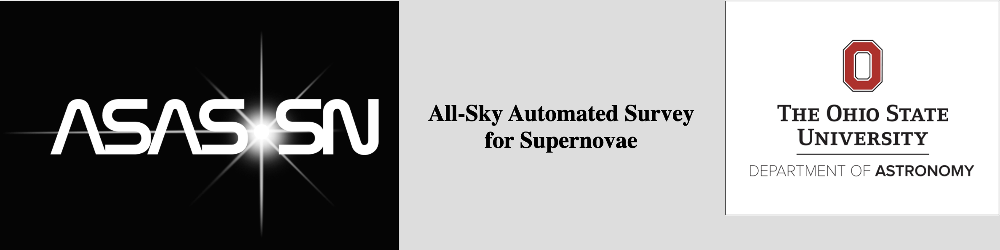
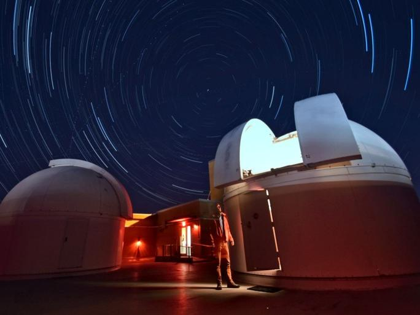

I am a graduate student in the Department of Astronomy and Astrophysics at Penn State University. During my first year, I began working with Dr. Abe Falcone and Dr. Steve Kerby on X-ray data analysis. My current project involves analyzing X-ray observations of Fermi 4FGL-DR4 unassociated sources with The Neil Gehrels Swift Observatory. Prior to PSU, I worked as a data analyst with, the observational transient group, ASAS-SN at The Ohio State University in Columbus, Ohio where I completed my B.S. with honors in Astronomy and Physics in 2022.
Research Interests: Supernovae and transients, high energy astrophysics, extragalactic astrophysics
Fun Fact: I'm a triplet with two brothers. No, we are not identical.
SS Cyg Observation Poster
If Poster Image does not load or to see a larger image, Click Here
RS Ophiuchi Spectral Analysis Presentation
If presentation slides do not load or to see a larger image, Click Here
Research

Current Research Multiwavelength Spectral Analysis of 4FGL-DR4 Unassociated Sources
I'm working with Dr. Abe Falcone and Dr. Steve Kerby on analyzing Fermi 4FGL-DR4 Unassociated Sources with Fermi-LAT, Swift-XRT, and Swift-UVOT observations.
/*
Past Research Position ASAS-SN Data Analyst
Data analyst of ASAS-SN photometric data.
I work on daily quality control of images taken by ASAS-SN and help name and release transient source candidates including Supernovae (SNe), Cataclysmic Variables (CVs), Tidal Disruption Events (TDEs) and more to the ASAS-SN Transients Webpage.
The candidates include both sources discovered by ASAS-SN and sources discovered by another group but independently detected by ASAS-SN.
First Author Publications: Echo Location: Distances to Galactic Supernovae From ASAS-SN Light Echoes and 3D Dust Maps
Light echoes occur when light from a luminous transient is scattered by dust back into our line of sight with a time delay due to the extra propagation distance. We introduce a novel approach to estimating the distance to a source by combining light echoes with recent three-dimensional dust maps. We identify light echoes from the historical supernovae Cassiopeia A and Tycho’s SN in nearly a decade of imaging from the All-Sky Automated Survey for Supernovae (ASAS-SN). Using these light echoes, we find distances of 3.6 ± 0.1 kpc and 3.2+0.1-0.2 kpc to Cas A and Tycho, respectively, which are generally consistent with previous estimates but are more precise. These distance uncertainties are primarily dominated by the low distance resolution of the 3D dust maps, which will likely improve in the future. The candidate single degenerate explosion donor stars B and G in Tycho are clearly foreground stars. Finally, the inferred reddening towards each SN agrees well with the intervening H I column density estimates from X-ray analyses of the remnants.
Neumann, K. D., et al. 2024, arXiv e-prints, p. arXiv:2407.14584 The ASAS-SN Bright Supernova Catalog -- V. 2018-2020
This catalog contains data on almost 1500 supernovae and their host galaxies.
Due to the nature of the ASAS-SN telescopes, this catalog focuses on spectroscopically confirmed supernova with brightnesses above 18th magnitude in the g-band.
Supernovae discovered by ASAS-SN and supernova discovered by other groups are included, and we label whether we independently recovered externally discovered supenovae from ASAS-SN photometry.
This catalog is meant to allow for large statistical analyses utilizing both these supernova and those from the previous four catalogs for a total sample of 2427 bright supernovae.
Neumann, K. D., et al., 2023, MNRAS, 520, 4356
Previous Projects
Condor Array Telescope The Condor Array Telescope is an astronomical research telescope built, concieved, and managed by a small project team at Stony Brook University.
The Project is funded by the Advanced Technologies and Instrumentation Program of the National Science Foundation. This is disuccsed in my research section of the website but I will link the poster for this project here also.
Photometric Observations of the Dwarf Nova SS Cyg Immediately Following an Outburst In the Fall of 2020 I took V-band observations of the Dwarf Nova SS Cygni immediately following an outburst and measured the magnitude decremenet over the span of three weeks. The observation and data analsyis was carried out entirely by myself and two other
senior astrophysics students. The poster I presented on this project is linked below.
Evolution of Recurrent Nova RS Ophiuchi via Optical Spectroscopy In the Fall of 2020 I utilized archived data from the SMARTS/Stony Brook Atlas of Southern Novae
to perform a spectral analysis of RS Oph's 2006 outburst. I then gave a presentation on the spectral evolution using optical
spectroscopy data. This presentation is linked below.
Education

Pennsylvania State University -- University Park, PA Present Graduate Student in Department of Astronomy & Astrophysics The Ohio State University -- Columbus, OH May 2022 Bachelor of Science in Astronomy and Astrophysics and 2nd Major in Physics
Magna Cum Laude
with honor in Arts and Sciences
Teaching Experience At OSU
Astronomy 1102 & 1144: Introductory Level Astronomy Courses where I helped prepare homework, wrote daily quizzes, managed attendance, and graded assignments.
Physics 2300 & 2301: Intermediate Classical Mechanics Courses where I tutored students on past and current material and worked with groups of students on weekly assignments.
Contact
Email: kdn5172@psu.edu
neumann.kyle15@gmail.com
Address: 525 Davey Laboratory
251 Pollock Road
University Park, PA 16802